Liceo scientifico statale Leonardo da Vinci Genova
Classe: 3^A
Anno scolastico: 2016/2017
Progetto di alternanza scuola lavoro: Leo a Museo
Referente: Prof.ssa Silvia Canneva (Disegno e storia dell'arte)
Prof.ssa Maria Grazia Cerruti (Italiano e Latino)
Prof.ssa Ottavia Parodi (Inglese)
History of the palace
1643 - 1655
Stefano Balbi, a member of the rich family of genoese traders, commissioned to architects Pier Francesco Cantone and Michele Moncino the building of the royal palace
1679
The Balbi family sold the palace to the Durazzos who enlarged it. Most of the rooms were redecorated.
1705
The doorway, the hall and the main stairs underwent some modifications. The creation of the hall of mirrors dates back to this period.
1823
The Durazzo family gave the palace to the Savoy one.
1919
Vittorio Emanuele III gave the palace to the italian state.
1964
The demolition of the royal bridge was a consequence of the building of the driveway.
2006
The palace became a unesco world heritage site.
Halls of the palace

- Vestibolo
- Battaglie
- Tempo
- Pace
- Del Veronese
- Sala degli specchi
- Non presente
- Non presente
- Galleria della cappella
- Non presente
- Del Trono
- Delle udienze
- Camera da letta del Re
- Bagno del Re
- Bagno della Regina
- Salottino giallo
- Salottino azzurro
- Camera da letto Regina
- Salotto della Regina
- Salotto di Diana
- Sala degli arazzi
- Salotto dell'aurora
- Sala da ballo
The audience chamber
Between 1830 and 1840 the royal family adapted the main floor of the palace to their needs. The so called "The audience chamber" was obtained by the union of two living rooms in 1843.
Vaults are decorated with stucudes that frame the frescoes where "Giano" is portrayed while giving the keys of the war temple to supiter. Curtains are made of precious silk and show the splendour of those times
~ Martina Dufour
Portrait of Caterina Balbi Durazzo
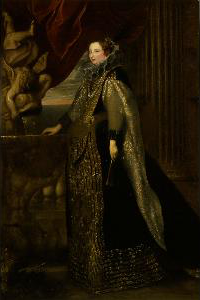This oil on canvas ,painted by Anton Van Dyck, portrays Caterina Balbi Durazzo. it was commisioned by her father-in-law to celebrate the wedding of his son with her. The painting was referred to as "Portrait of a Lady in Black"; only during the 20th century Caterina Durazzo was recognized as the lady in the picture
~ Martina Dufour
The rape of Proserpine

This oil on canvas, displayed in the audience chamber and painted by Valerio Castello, represents the rape of Proserpine. The dominant red colour of Pluto's dress represents fire and may be the symbol of passion, while blue stands for fear.
~ Xhesi Cukali
The tapestry in the audience chamber
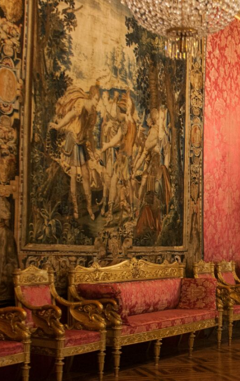This tapestry represents "Diana" with "Oto" and "Efialte", two giants quarreling in order to have both the goddess's favor. This tapestry was weaved in Paris (early 17th century) in the so-called "boutique d'or". First placed in the northern part of the tapestry room, it was then transferred to the audience chamber.
~ Federico Bongiovanni
The hall of mirrors
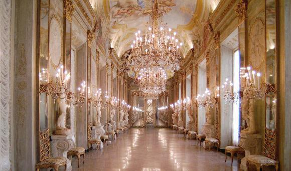The magnificent hall of mirrors in baroque style is one of the most outstandings rooms of the royal palace. Commissioned by Eugenio Durazzo, it was built between 1682 and 1685 and takes inspiration from the more famous hall of mirrors (Pala of Versailles) the game of mirrors enhances the quite limited space of the hall. the purpose of the hall was to show the huge wealth (considering the high costs of mirrors in the 17th century) as well as the refined taste of the Durazzo family. The message conveyed is to remin visitors that vices can corrupt human life
~ Angelica Oblieght
Sardanapalo (Assurbanipal)
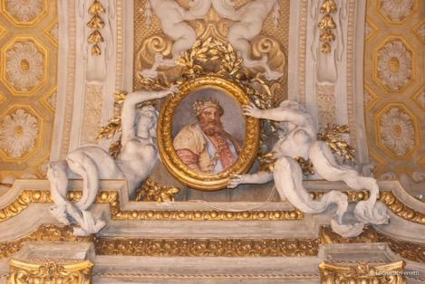Sardanapalo, the last king of Assyrian (wall to the right of the entrance) is depicted on two putti (painted as bas-reliefs) representing respectively Libido (Lust) and Crapula (Golosità) respectively. The first putto is sitting on a crocodile next to a parakeet, the second one on a pig.
~ Angelica Oblieght
Tolomeo XIII
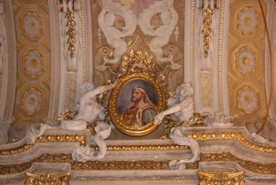On the same wall at the bottom of the room is the portrait of Ptolemy XIII, the last king of Egypt, to whom are associated the vices of Ingratitude and Remorse (due to the murder of his friend Pompey to enter Caesar's graces). The putto symbolizing Ingratitude holds two vipers, a male and a female, and a ivy branch; The putto representing the Rimor has a twisted serpent to his left arm.
~ Angelica Oblieght
Romolo Augustolo
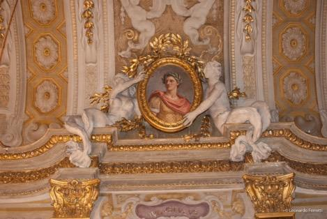In front of the picture of Ptolemy XIII is placed the painting of Romulus Augustolo, the last king of Rome, to whom Vito and Pigrizia are associated. The putto representing Viltà is sitting in a marsh with a rabbit and a rabbit next to it, the putto symbolizing the Pigrizia is placed with arms folded on a spring cushion next to a turtle.
~ Angelica Oblieght
Dario the last king of Persia

The fourth and last picture (opposite Sardanapalo's) is Dario, the last king of Persia, to whom Usurpation and Superb are associated. Usurpation is incarnated by a putto fleeing with a crown in his hand, Superb from a child with a mirror in his hand and beside a peacock. To complete the allegory, the fresco at the center of the vault separating Sardanapalo from Dario represents a woman on a camel, symbol of Asia, the continent of the two sovereigns, while in the fresco at the center of the vault separating Ptolemy XIII And Romulus Augustolo we find a woman on a bull, an allegory of Europe from which the two sovereigns come from.
~ Angelica Oblieght
The tiumph of Bacchus

The scene is set in an imaginary space. In the centre there is Bacchus, crowed with a spray of ivy and who has the classical posture of a greek statue. A meanad is dancing in front of him. The figure of Diana, in the background, is hiding her face and may be symbolic of chastity escaping from lust.
~ Chiara Panina
The dressing room of Venus
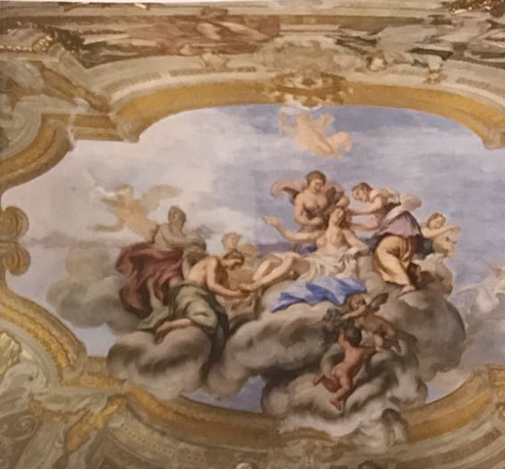Venus is lying on the clouds while two maidens are arranging her hair anda third one is taking some jewels out of a casket. These figures are supposed to be the three graces.
~ Chiara Panina
Apollo and Marsia
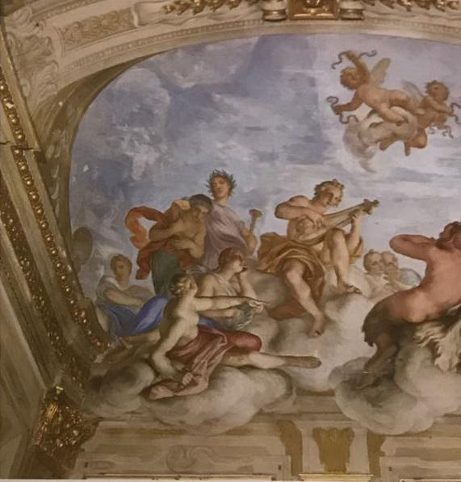In the middle of the painting Apollo is sitting while playing the lyre. In the foregruond can be seen the muse of tragedy, the muse of astronomy and the muse of music
~ Chiara Panina
The chapel gallery
In this gallery are displayed two couples of frescoes painted by the famous genoese artist Lorenzo De Ferrari: "The triumph of Venus" and "The crowning of Hercules" on the southern wall; "The rape of Elena" and "The escape from Troy" on the perpendicular walls.
~ Chiara Privitera
"The triumph of Venus" and "The crowning of Hercules"


"The rape of Elena" and "The escape from Troy"

The vault of the chapel gallery
 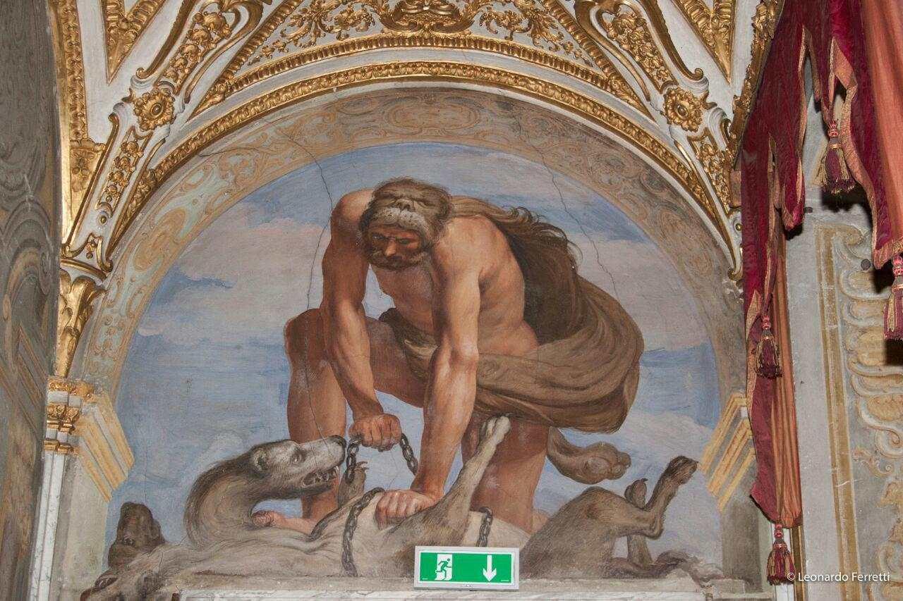
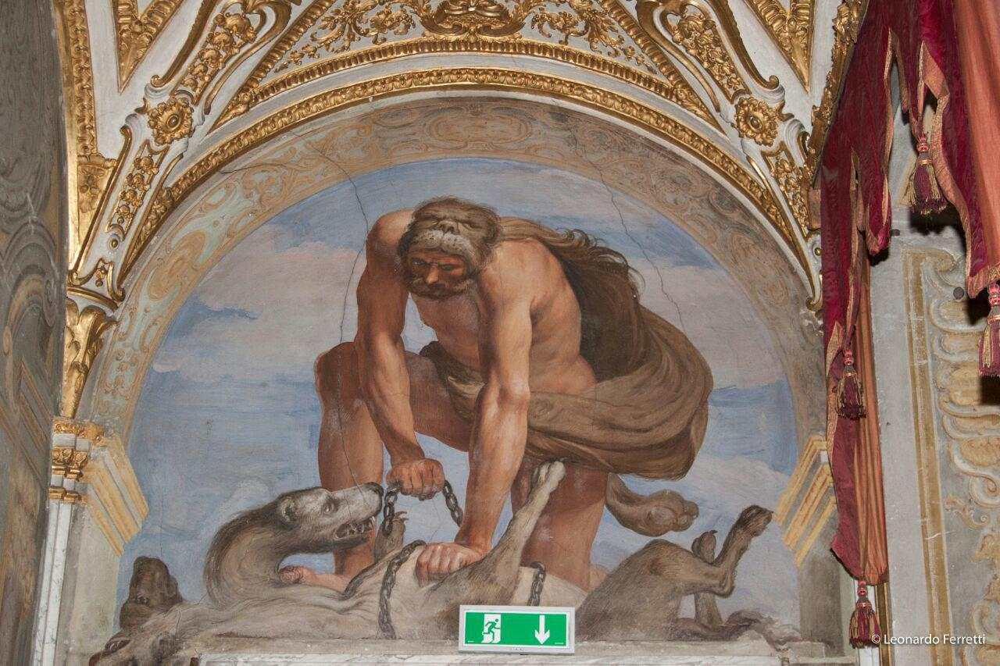
Central to the vault of the room, painted by Giovanni Battista Carlone in 1655, is the figure of Jupiter holding a sceptre. The god shows Justice the way to the earth.
~ Giulia Podetti
Salotto della pace

Moses' finding in the Nile's waters
The picture, painted by Giulio Romano in 1518 and ispired by frescoes belonging to Raphael's school, is a representation of a major event of old testament. A group of six maids taking the pharaon's daughter to bathe in the Nile find Moses in a basket. He will be grown up in the king's palace, but will be weaned by his mother Iochebed.
~ Gabriele Spilinga

Crossing of the red sea
This picture, painted by Giovanni Francesco Romanelli, is displayed in "the room of peace". The central theme of the work is the crossing of the red sea by the jews pursued by egyptian soldiers. In the middle of the painting is visible moses holding his stick in one hand while with the other is trying to calm the water. An important detail is given by the Representation of the horse in the lower left side of the painting; it has the same features and the same pose as another horse represented in the trajan column.
~ Michele Torazza
The fresco in "The room of time"

"The room of time" is named after the fresco decorating the vault, known as "truth unveiled by time". It is an allegory, an image rapresenting an idea. The fresco is supposed to be painted by Domenico Parodi. (Mid 18th century). Time is represented as a winged figure grasping a sickle. The character wearing a white dress is Truth who is undressed by time.
~ Sara Colleoni
The journey of Jacob

This picture was painted by Gio Benedetto Castiglione (1609-1664), called "Grechetto" and known as "the artist painting the journey of Jacob". The painting depicts on the right side a rider covered only by a blue coat and mounting a white horse.
~ Luca Cavalca
"Christ and the adulteress"

This oil on cannas, displayed in "the room of time" was painted by an anonymous Flemish artist (mid 16th century) it represents Jesus on his kneels while writing in the dust and holding in his right hand a stone or some handful of earth. He is looking at a woman, the adulteress, with her head bowed down and richly dressed as an elegant courtier.
~ Giorgia Barilli
Aurora lounge
The traditional name of the Living Room of Aurora comes from an incorrect interpretation of the vault fresco, already identified as "The Wedding of Aurora and Cephalosus", while recent studies have recognized it correctly as the Wedding of Flora (Goddess of Spring ) And Zefiro (God of the Wind). The environment is similar in size to the Room of Time (5.64x 6.45). The Aurora Hall is connected to the terrace through a south-facing glass door, while the north is connected to the Tapestry Room. Inside the room, looking south, on the left where the elevator is now, there was a hoist. The explanation for the presence of the latter is that the Aurora room was used as a dining room, often on political encounters.
~ Camilla Toscanini
The wedding of "Zefiro" and "Flora"

The picture, painted by Jacopo Antonio Boni (1688-1766), represents a scene projected against a blue sky in the background. In the middle are visible "Flora" and "Zefiro". "Flora", the godess of spring, is the maiden wearing a white robe and holding a flower in her hand. "Zefiro", a strong wind, is the winged boy who is going towards "Flora".
~ Pietro Gerbi
Transfiguration of saint Theresa d'Avila

This oil on canvas, painted by Bernardo Strozzi, is a representation of a dream. An angel is depicted in the act of stabbing saint Theresa's heart. The angel's blond and bright hair are in striking contrast with the dark of the painting.
~ Camilla Toscanini
The room of battles
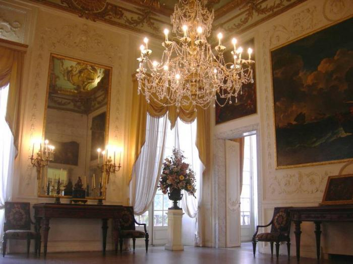This room is named after two paintings representing seabattles. In the 18th century it was known as "Rubens' room"; in fact here were displayed two impressive paintings by the famous Flemish artist.
~ Luca Bisio

This picture, displayed in "The room of battles", was painted by Carlo Antonio Tavella around 1720. It rapresents the bloody sea battle fought by Ottoman and Maltese, not too far from Sicily's coast. The stormy sea and the strong wind convey a particulary impressive atmosphere. In the background, behind the clouds, a poweful light cominig from the left side of the painting might connote the imminent end of the storm.
~ Lorenzo Clivio
Room not available
Photos
Artworks 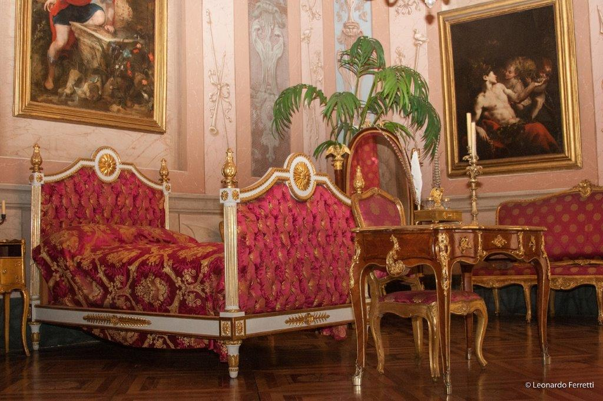
Guides
Authors

Contact Us
Via Balbi, 10, 16126 Genova
010 271 0236

palazzorealegenova@beniculturali.it
Opening time:
- From Tuesday to Saturday 9-19
- Sunday 13: 30-19: 00
- Monday closed